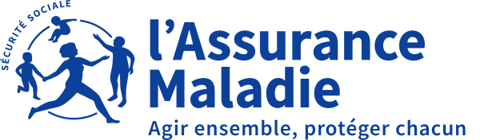

🏥
Hospital transport
To the CHAM, Chambéry, Grenoble, Lyon: admissions, discharges and transfers between hospitals.
Dialysis, chemotherapy, consultations, hospital stays: we drive you to hospitals and medical practices across the whole region, with a medical prescription, with nothing to pay upfront where the conditions are met.
* Direct billing under the conditions set by l'Assurance Maladie (French national health insurance) — a €4 excess per journey is payable by the patient (capped at €8/day).

Approved vehicleTo the CHAM, Chambéry, Grenoble, Lyon: admissions, discharges and transfers between hospitals.
Your seated medical transport is billed directly to l'Assurance Maladie, with a prescription.
Dialysis, chemo, radiotherapy, rehabilitation: same times, same driver, at every session.

ASM Taxi is approved by the Caisse Primaire d'Assurance Maladie (the local French health insurance fund): a licensed vehicle for seated patient transport, with a driver experienced in accompanying people who are unwell, elderly or have reduced mobility (able to sit).
Based at Bourg-Saint-Maurice railway station, we cover the whole of Haute-Tarentaise — from Val d'Isère to Aime — and drive our patients to:

Your transport is covered by l'Assurance Maladie when a doctor prescribes it (a medical transport prescription, issued before the journey except in an emergency). This applies in particular to:
55% at the standard rate and 100% in many situations (exempting long-term illness, accident at work, maternity, C2S…). A €4 excess per journey (capped at €8/day, €50/year) is payable by the patient.
Direct billing: we invoice your health fund directly — since 2025, being exempt from paying upfront means agreeing to share the journey when your condition allows it. General information taken from ameli.fr; your exact situation is a matter for your own fund.
Regular journeys to your centre: reliability guaranteed at every session, there and back.
Repeated journeys to treatment centres, with waiting or a scheduled return.
Medical appointments, imaging, laboratories: door to door, stress-free.
Hospital admissions and discharges, transfers between hospitals.
Repeated sessions organised for the whole length of your treatment.
Long-term illnesses (ALD), accidents at work, maternity (conditions apply).
They issue the medical transport prescription suited to your condition (professional seated transport).
On 07 67 67 69 81: we set the times, including for regular series, and answer your questions about your cover.
Pick-up at home, escort right to the hospital department, guaranteed return, direct billing to your health fund.
That is all — we handle the electronic claims and the billing with your health fund.
It is a taxi that has signed an agreement with l'Assurance Maladie (French national health insurance). It is authorised to carry seated patients with a medical prescription and to bill the health fund directly (direct billing) under the applicable conditions. ASM Taxi is approved for Savoie.
In most cases, no: we operate direct billing and invoice your health fund directly. Only the statutory excess (€4 per journey, capped at €8 per day) is payable by you. Since 2025, being exempt from paying upfront means agreeing to share the journey when your condition allows it.
Yes, you are free to choose your approved transport provider. If you live in Haute-Tarentaise, we are your local solution — including for regular journeys booked in advance.
Yes, this is the heart of our medical work: same times, same driver wherever possible, reliability guaranteed at every session, there and back.
Yes, a companion can travel with you at no extra cost as part of your transport. Just let us know when you book.
We provide seated transport: if you can leave your wheelchair to sit in the vehicle (chair folded in the boot), that is perfect. For transport in a non-folding wheelchair or lying down, a medical vehicle (VSL/ambulance) is required — we will gladly point you in the right direction.
Call us: together we check your cover and set up your journeys.